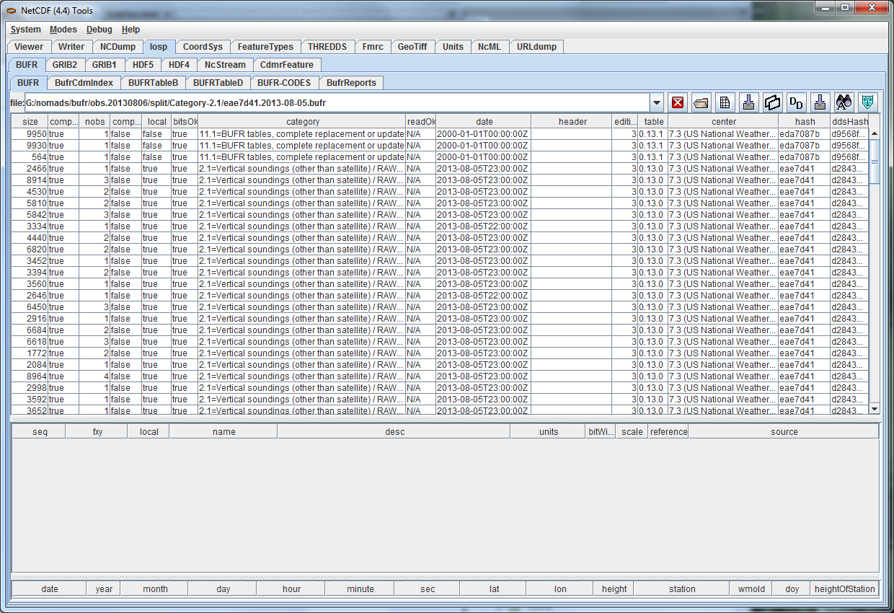
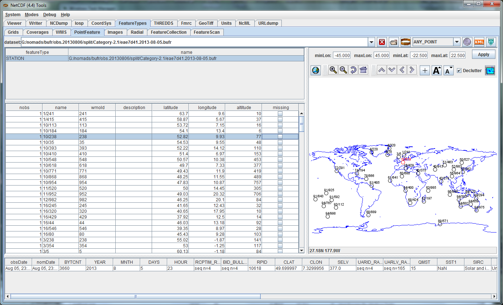

How to write the index.
1. Load the BUFR file into the IOSP/BUFR/BUFR tab

2. Press the "Write Index" button on the upper right  . Accept the default name of <filename>.ncx
. Accept the default name of <filename>.ncx
3. Load the index file into the IOSP/BUFR/BufrCdmIndex tab. You can make changes to the ActionS column:

4. Press the "Write Index" button on the upper right to save your changes.
5. Now the index file will be used if you open the original file in the FeatureType/PointFeature tab.

We will eventually write these files automatically.